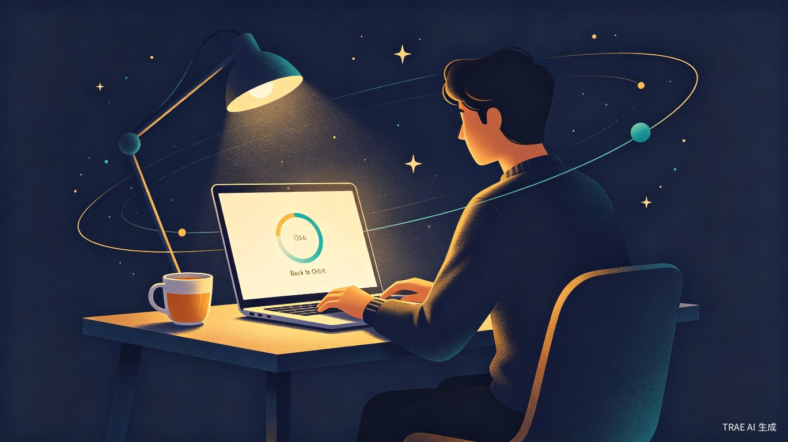
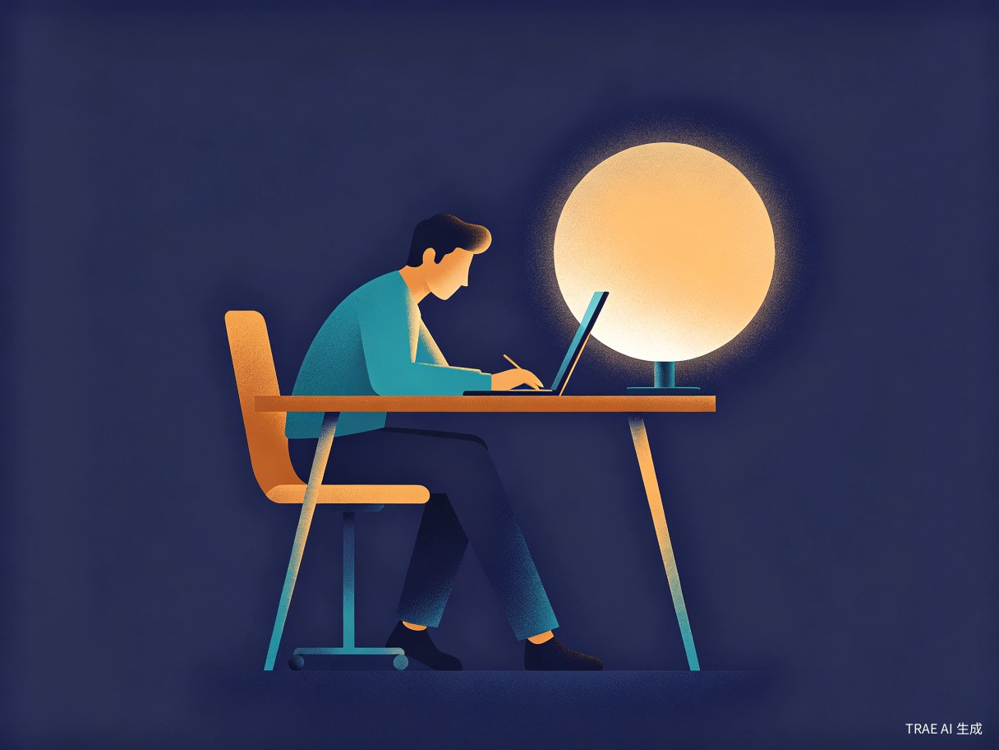
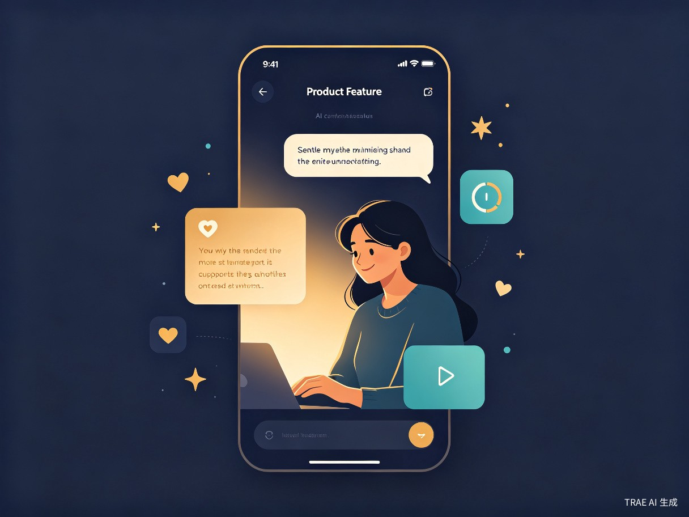

下班后的「计划黑洞」
大量知识工作者和学习者都有这样的经历：白天在工位上构思了完美的个人项目计划—— 学一门新技能、写一篇技术博客、推进副业作品——但下班回到家后， 精力被掏空、上下文丢失、手机和杂事不断打断， 原本清晰的计划变成「明天再说」，个人项目长期停滞。
精力低谷
下班后认知资源耗尽，面对空白屏幕无法启动，陷入「想做事但做不到」的焦虑循环。
上下文断裂
上次做到哪了？下一步是什么？每次重新回忆都要消耗宝贵的启动精力。
分心劫持
社交媒体、家务、外卖通知……无数微小干扰在启动前就把注意力碎片化。
断档焦虑
连续几天没推进后产生自责，反而更不想开始，形成恶性循环。
「我并不缺乏计划能力，我缺乏的是在疲惫状态下重新进入行动的能力。」
一个温柔的「重启按钮」
回到轨道不是又一个待办清单或番茄钟。 它是一个面向下班后场景的 AI 陪伴系统——在你精力最低的时刻， 帮你恢复上下文、降低启动门槛、屏蔽干扰、温柔推进， 让每次短暂的晚间时光都能产生实际进展。
核心理念：不要求你自律，而是让启动变得毫不费力。
五大核心模块
项目记忆卡
上下文恢复为每个个人项目维护一张「记忆卡」：记录项目目标、当前进度、上次做到哪里、下一步具体动作。下次打开时，AI 自动呈现上次的状态摘要，免去回忆成本，让你 30 秒内找回上下文。
下班状态扫描
精力感知每天打开时，通过轻量级交互（滑动条、快捷选择）快速评估当前精力水平、可用时间、心情状态和感知阻力。AI 据此动态调整当晚的行动方案——精力高时安排深度工作，精力低时只做 10 分钟微启动。
AI 重启卡
智能规划基于状态扫描结果和项目记忆，AI 生成三档行动方案：10 分钟启动动作（极低门槛）、30 分钟推进计划（适度挑战）、以及全程陪伴话术。话术风格温暖但不幼稚，像一位了解你的朋友在旁边轻声提醒。
分心收纳箱
干扰隔离执行过程中冒出的干扰念头（「回个微信」「查个快递」「点个外卖」）一键暂存到收纳箱，不打断主线任务。结束后统一回顾处理，既不丢失也不劫持注意力。
明日接力棒
连续性保障每次结束时，AI 自动生成「下次继续入口」：更新项目记忆卡、记录今晚进展、预设明天的启动动作。下次打开时无缝衔接，彻底消除「断档→遗忘→放弃」的恶性循环。
从疲惫到专注的旅程
用户打开「回到轨道」后，经历一个从状态感知到行动启动的完整流程：



技术实现思路
基于 TRAE 平台的 AI 能力，构建轻量、智能、有温度的产品体验：
AI 对话引擎
基于大语言模型实现状态感知、个性化话术生成和动态方案调整
项目记忆系统
结构化存储项目进度与上下文，支持跨会话连续性
精力感知模型
通过轻量交互输入，智能匹配最适合当前状态的任务难度
陪伴话术系统
预设多种语气模板，根据用户偏好和当前状态动态组合
分心收纳机制
低摩擦干扰捕获与延迟处理，保护主线任务注意力
接力棒引擎
自动生成下次启动入口，确保项目连续性不被打断
为什么不同于现有工具？
市面上不乏待办清单、番茄钟、习惯追踪类产品，但它们都假设用户「有精力去使用工具」。回到轨道的独特之处在于：
从「管理」到「陪伴」
不做冷冰冰的任务管理器，而是做一位了解你状态、帮你降低启动成本的 AI 伙伴。语气温暖、方案灵活、从不催促。
场景极聚焦
只解决一个问题：下班后如何从零启动个人项目。不做大而全，只做小而精，把这一个场景做到极致。
精力自适应
不是固定时长的番茄钟，而是根据你当前的真实精力动态调整方案。精力低就做 10 分钟，精力高就做 30 分钟。
连续性保障
通过项目记忆卡和明日接力棒，彻底解决「每次都要从头回忆」的痛点，让断档不再是放弃的理由。
让每个人都能「回到轨道」
短期目标是用 TRAE 平台快速构建 MVP，验证核心假设。长期愿景是打造一个面向所有「想做事但做不到」的人的陪伴型 AI 产品生态。
「你不缺计划，你缺的是一个温柔的重启。」
我们相信，每个人都有推进自己项目的渴望和能力。 他们需要的不是更严格的自律训练，而是一个在疲惫时刻伸出手的 AI 伙伴—— 帮你恢复记忆、降低门槛、屏蔽噪音、温柔推进。 这就是「回到轨道」存在的意义。
期待你的支持
如果你也曾经历过下班后的「计划黑洞」，希望这个产品能为你点亮一盏灯。
🚀 支持回到轨道